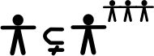

Welcome to my research homepage! It becomes outdated too fast, but I am trying to catch up.
I am a postdoctoral researcher in mathematics at Brown during the 2013-14 academic year.
I am running the Theory Seminar at Brown. Please, contact me if you would like to give a talk.
You can have a look at my
CV, or find me on
Google Scholar, LinkedIn,
Facebook,
Twitter,
Vkontakte or
Google+.
I am interested in efficient combinatorial algorithms for sparsification, summarization and testing properties of large data. I am focused on understanding the role of concise representations in:
- Approximation algorithms
- Learning theory and property testing
- Communication compelxity
- Differential privacy
E-mail
: "My first name"@"My first name".us.
Papers
|
Talks + Posters
-
Testing Properties under Lp Distances
- Harvard University, Theory seminar. November 12, 2013.
- Brown University, Providence, RI. Theory seminar. November 1, 2013.
- IBM Almaden Research Center, San Jose, CA. Theory seminar. October 25, 2013.
- Property Testing and Communication Complexity
[Slides: (pptx)]
- MIT, Boston, MA. Algorithms and Complexity Seminar. September 11, 2013.
- Accurate and Efficient Private Release of Datacubes and Contingency Tables
[Slides: (pptx)]
- Cornell University, CDI project meeting. May 07, 2013.
- Beating the Direct Sum Theorem in Communication Compelxity
- Aarhus University, Denmark. Theory seminar. May 22, 2013.
- MIT, Boston, MA. Algorithms and Complexity seminar. December 13, 2012.
- Princeton University, Princeton, NJ. Theory lunch. November 16, 2012.
- Overlapping Clustering with Qualitative Information
- FOCS 2012, New Brunswick, NJ. Poster session. October 22, 2012.
- Parallel Algorithms for Geometric Problems
- Microsoft Research, SVC, Mountain View, CA. Lab meeting. October 17, 2012.
- Learning and Testing Submodular Functions
[Slides: (pptx)]
- Microsoft Research, Redmond. Theory seminar. June 11, 2013.
- University of Melbourne, Australia. Theory seminar. April 19, 2013.
- UCLA, Los Angeles, CA. Theory seminar. February 04, 2013.
- Weizmann Institute of Science, Rehovot, Israel. December 30, 2012.
- Harvard University, Boston, MA. Theory of Computing seminar. December 10, 2012.
- Carnegie-Mellon University, Pittsburgh, PA. Theory Lunch. December 05, 2012.
- Carnegie-Mellon University, Pittsburgh, PA. Tepper School of Business, Operations Research Seminar. December 07, 2012.
- New York Computer Science and Economics Day 2012, Poster session. December 3, 2012.
- IBM T.J. Watson Research Cetner, Yorktown Heights, NY. IP for Lunch. November 14, 2012.
- Columbia University, NYC. Theory seminar. October 26, 2012.
- FOCS 2012. Poster session. October 22, 2012.
- Microsoft Research, Silicon Valley. Theory seminar. October 10, 2012.
- EPFL, Lausanne, Switzerland. Algorithmic Frontiers Workshop, poster session. June 2012.
- IBM Almaden Research Center, San Jose, CA. Theory seminar. May 2012.
- STOC 2012. Poster session. May 2012.
- Advances in Directed Spanners [Slides: (pdf)].
- University of Sydney, Australia. Theory seminar. April 9, 2013.
- Carnegie-Mellon University, Theory Lunch, November 2011.
- University of Maryland, Capital Area Theory Seminar, November 2011.
- Private Analysis of Graph Structure [Slides: (pptx)]
- EPFL, Lausanne, Switzerland. Algorithmic Frontiers Workshop, poster session. June 2012. [Poster: (pdf)]
- AT&T Labs --- Research, Florham Park, NJ. August 2011.
- Improved Approximation for the Directed Spanner Problem [Slides: (pptx)]
- AT&T Labs --- Research, Florham Park, NJ. Mathematics Research Colloquium and Informal Seminar. June 2011.
- STOC 2011. Poster session. June 2011.[Poster: (pdf)]
- Moscow State University. Combinatorial optimization seminar. May 2011.
- IBM T.J. Watson Research Center, Yorktown Heights, NY. IP for lunch. April 2011.
- St. Petersburg Institute of Fine Mechanics and Optics. Theory seminar. December 2010.
- Linear Bounds on Circuit Complexity and Feebly One-Way Permutations [Slides: (pdf)]
- Pennsylvania State University. Theory seminar. April 2010.
Conference talks
|
Personal
- Algorithms competitions.
I have participated in ACM ICPC and TopCoder competitions (as griffon) competing and setting problems in TopCoder Open Algorithms Finals.
- Teaching algorithms for high-school students.
I was teaching advanced classes in algorithms for high-school students for ~5 years, coaching teams for algorithmic competitions. I participated in preparation of training camps and contests for Russian Olympiad in Informatics and International Olympiad in Informatics (both in Russia and in the U.S.).
- Non-profit in education for high-school students.
I was a co-founder of a non-profit organization focused on advanced extracurricular education in algorithms for high-school students in St. Petersburg, Russia.
 : Homepage, Group on Vkontakte. Donations are always welcome! : Homepage, Group on Vkontakte. Donations are always welcome!
- Triathlon.
If I am not working then I am probably practicing for the next triathlon. Let's do it together! ;)
- Very nerdy!
There are some things I can't prove but rather just believe in, e.g.  (designed as a proposed logo for CSTheory website).
|